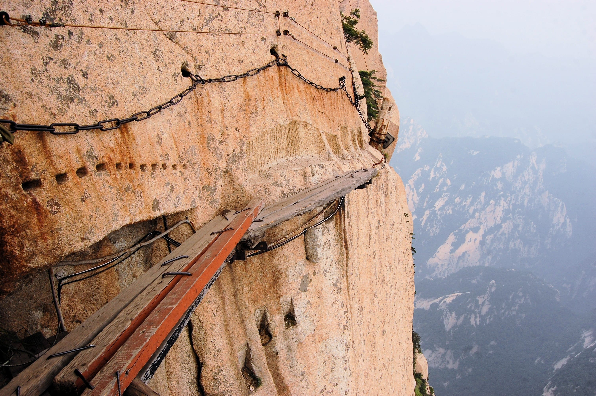
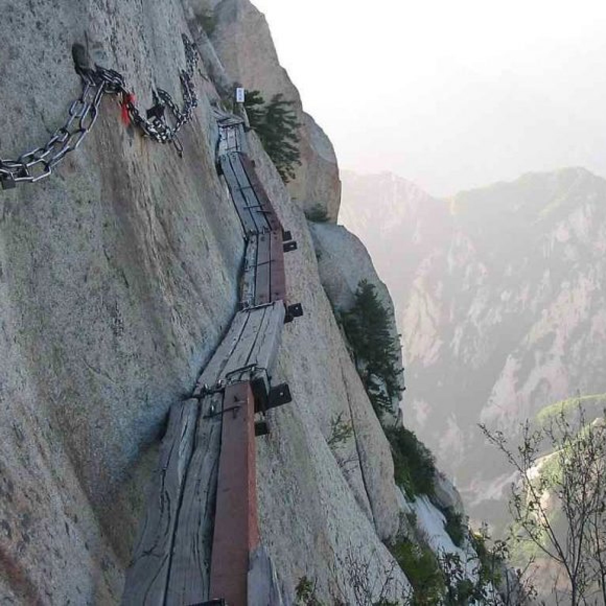
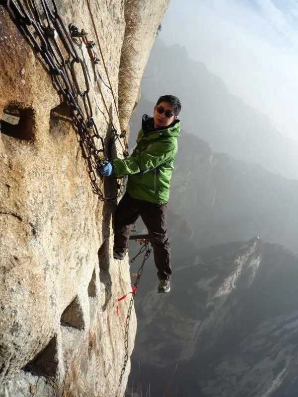
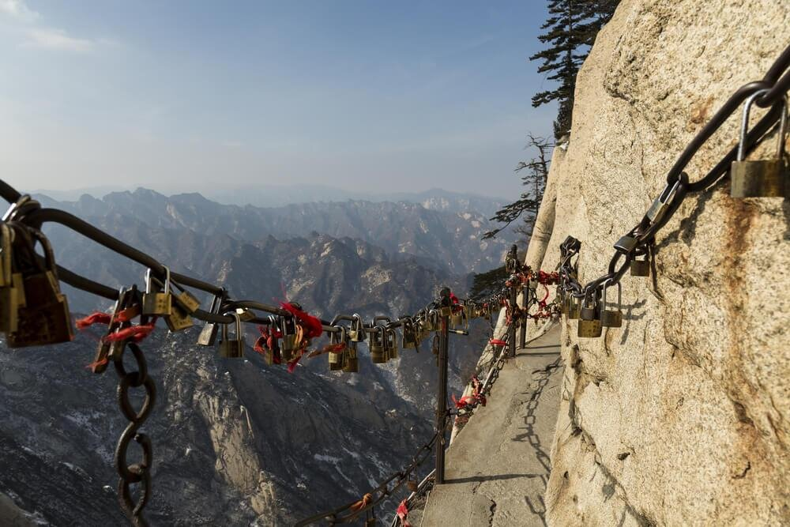
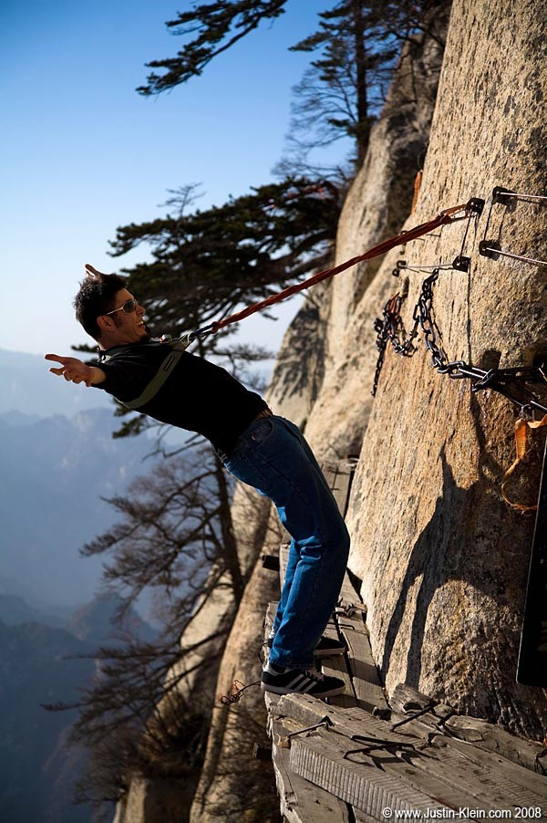
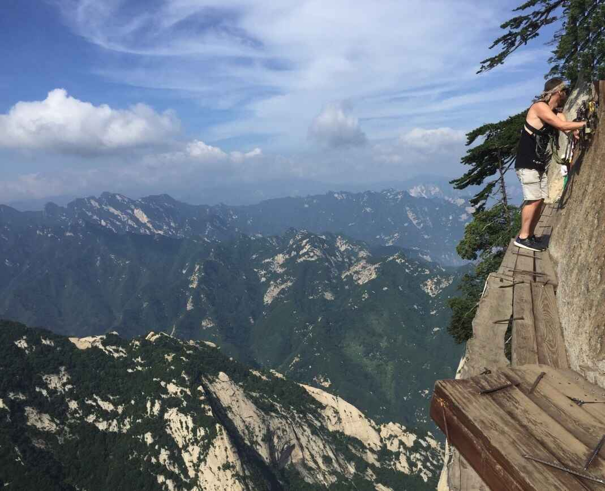
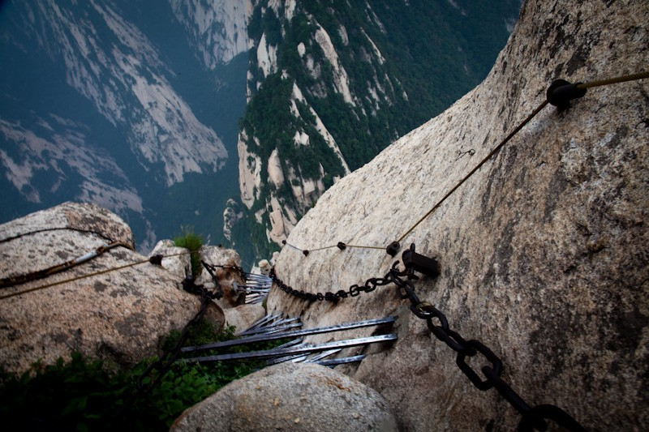
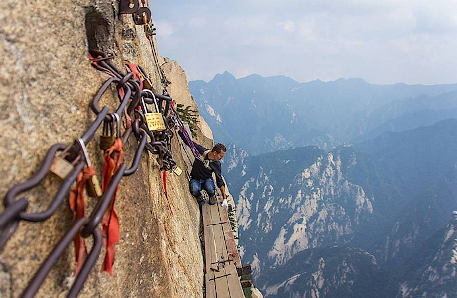
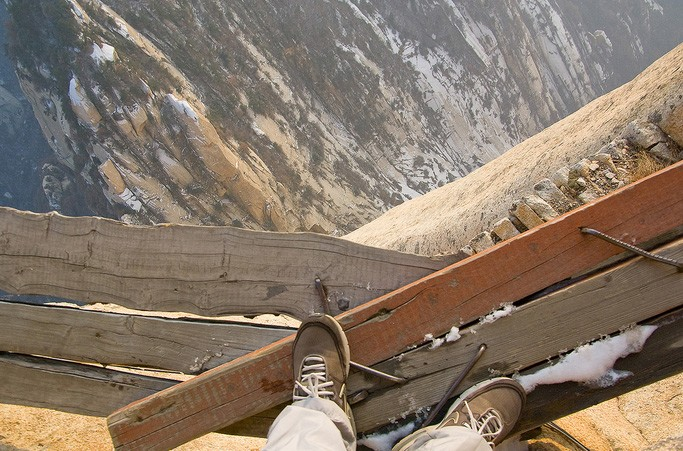

Тропа Смерти — это своеобразный аттракцион для экстремалов, который находится на горе Хуашань почти в самом центре Китая, а именно в провинции Шэньси. Знаменитая тропа расположена на отвесной скале на высоте нескольких сотен метров и представляет собой 3–4 доски, скрепленные между собой и проложенные вдоль горы. Тропа Смерти не появилась просто так и не была сделана специально для привлечения туристов. Изначально деревянная тропа через гору Хуашань была построена монахами примерно 700 лет назад. В то время тропа состояла лишь из досок, а цепи, поручни и снаряжение было сделано относительно недавно.
Длина тропы страха — всего около 130 метров. Она состоит из трех секций: Верхняя — наиболее безопасная и простая для прохождения. Длина этой секции около 20 м, ширина — 70 см, предусмотрено железное ограждение. Средняя — 10-метровый отрезок пути по практически вертикальной скале. Туристы спускаются вниз по так называемой «лестнице» (по сути, железным перекладинам, вбитым в расщелину). Помимо страховочных тросов, имеется лишь цепь, за которую можно придерживаться во время спуска. Нижняя — самая опасная и страшная. Именно эта часть дала название «тропе смерти Хуашань» в Китае, именно здесь сделаны леденящие кровь снимки людей продвигающихся над пропастью по узкой бровке (ширина в некоторых местах меньше 30 см). Деревянный настил «дороги по небу» опирается на клинья, укрепленные в отверстиях скалы. А на отдельных участках нет и настила — туристы продвигаются вереницей, цепляясь за отвесную стену и осторожно переставляя ноги с одного камня на другой.
По неофициальным данным, на Хуа ежегодно гибнут до 100 туристов. Власти Китая не подтверждают и не опровергают эту статистику, но летальные случаи на тропе смерти Хуашань в Китае периодически всплывают в прессе. Так, в 2018 году один из туристов, продвигавшихся по самой опасной секции, неожиданно отстегнул оба карабина, развернулся и на глазах попутчиков прыгнул в пропасть. А в 2019 году сообщалось о несчастном случае — молодая туристка, поднимаясь вверх, попыталась сделать селфи, но не удержалась на уступе и разбилась в ущелье.
        